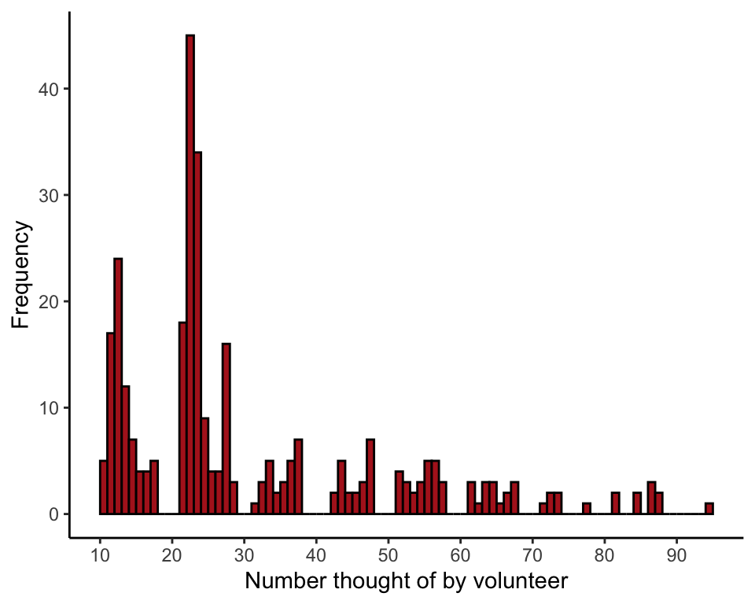
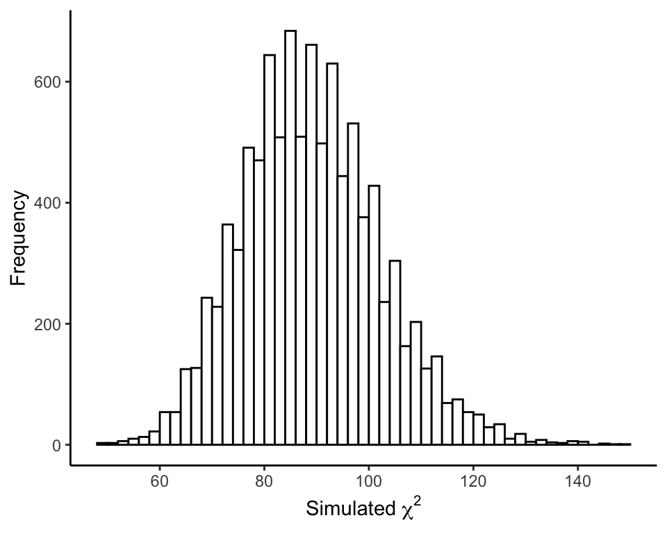
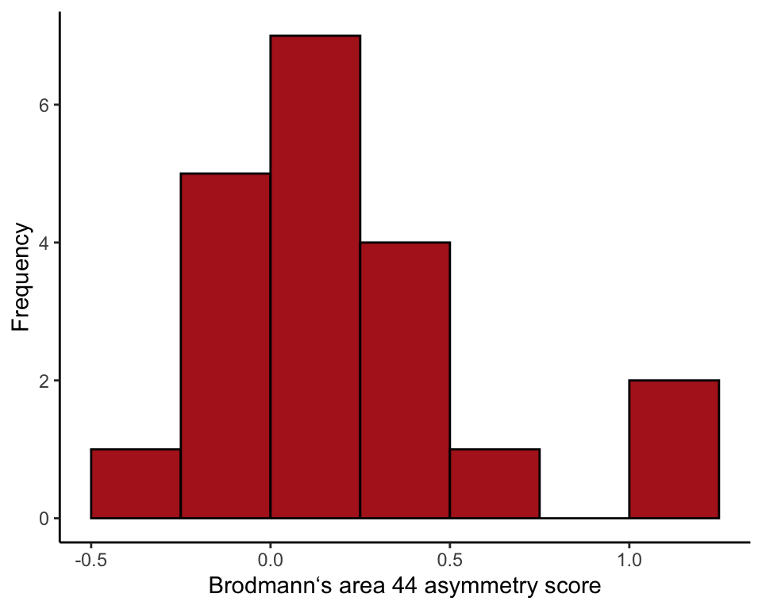
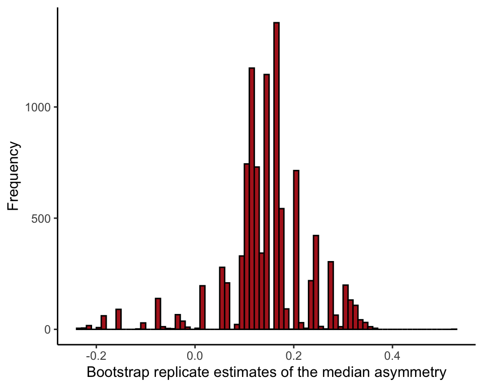
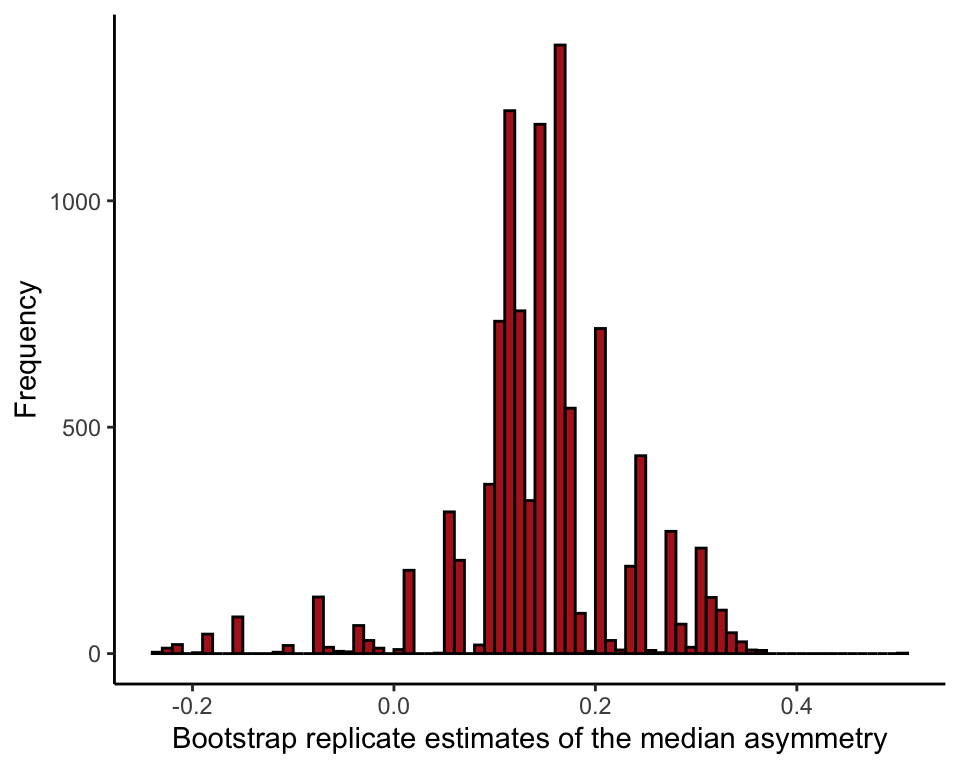
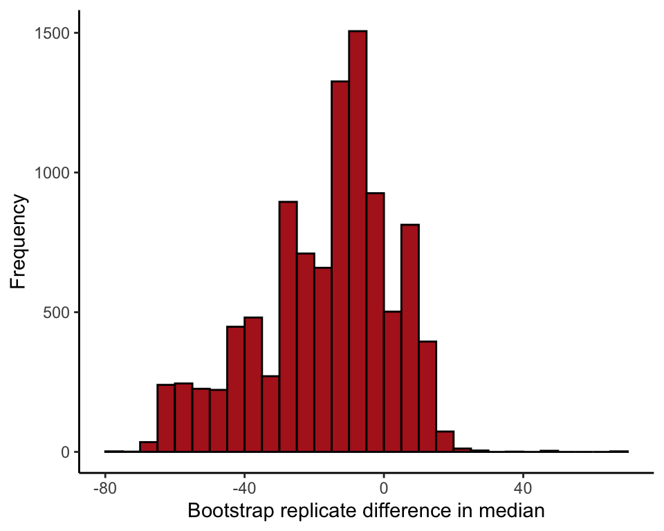

R code for example in Chapter 19:
Computer-intensive methods
We used R to analyze all examples in Chapter 19. We put the code here so that you can too.
New methods on this page
-
Calculate a P-value for a χ2 goodness-of-fit test using simulation:
chisq.test(observedFreq, simulate.p.value = TRUE, B = 10000) -
Calculate a bootstrap standard error:
boot(chimp$asymmetryScore, boot.median, R = 10000) -
Other new methods:
- Bootstrap 95% confidence interval.
Load required packages
We need ggplot2 for ordinary graphs. The boot package is for bootstrap estimation.
library(ggplot2)
library(boot)Example 19.1 Two-digit “psychic”
Hypothesis testing using simulation to determine whether all two-digit numbers occur with equal probability when people choose two-digit numbers haphazardly.
Read and examine data
Each row is the two-digit number chosen by a different individual.
haphazard <- read.csv(url("https://whitlockschluter3e.zoology.ubc.ca/Data/chapter19/chap19e1TwoDigitNumbers.csv"), stringsAsFactors = FALSE)
head(haphazard)## numberSelected
## 1 10
## 2 10
## 3 10
## 4 10
## 5 10
## 6 11Histogram
Plot the frequency distribution of two-digit numbers chosen by volunteers (Figure 19.1-1).
ggplot(data = haphazard, aes(x = numberSelected)) +
geom_histogram(fill = "firebrick", col = "black", binwidth = 1,
closed = "left", boundary = 0) +
scale_x_continuous(breaks = seq(from = 10, to = 100, by = 10)) +
labs(x = "Number thought of by volunteer", y = "Frequency") +
theme_classic()
Frequency table
Table the two-digit numbers chosen by volunteers. Notice that many numbers between 0 and 99 are not represented in the data.
table(haphazard$numberSelected)##
## 10 11 12 13 14 15 16 17 21 22 23 24 25 26 27 28 31 32 33 34 35 36 37 42 43 44
## 5 17 24 12 7 4 4 5 18 45 34 9 4 4 16 3 1 3 5 2 3 5 7 2 5 2
## 45 46 47 51 52 53 54 55 56 57 61 62 63 64 65 66 67 71 72 73 77 81 84 86 87 95
## 2 3 7 4 3 2 3 5 5 3 3 1 3 3 1 2 3 1 2 2 1 2 2 3 2 1To make sure that numbers not chosen are nevertheless included in the calculations, we must convert the variable to a factor and specify all possible categories.
factorData <- factor(haphazard$numberSelected, levels = 10:99)
observedFreq <- table(factorData)
observedFreq## factorData
## 10 11 12 13 14 15 16 17 18 19 20 21 22 23 24 25 26 27 28 29 30 31 32 33 34 35
## 5 17 24 12 7 4 4 5 0 0 0 18 45 34 9 4 4 16 3 0 0 1 3 5 2 3
## 36 37 38 39 40 41 42 43 44 45 46 47 48 49 50 51 52 53 54 55 56 57 58 59 60 61
## 5 7 0 0 0 0 2 5 2 2 3 7 0 0 0 4 3 2 3 5 5 3 0 0 0 3
## 62 63 64 65 66 67 68 69 70 71 72 73 74 75 76 77 78 79 80 81 82 83 84 85 86 87
## 1 3 3 1 2 3 0 0 0 1 2 2 0 0 0 1 0 0 0 2 0 0 2 0 3 2
## 88 89 90 91 92 93 94 95 96 97 98 99
## 0 0 0 0 0 0 0 1 0 0 0 0Test statistic
Here, we are using the \(\chi^2\) goodness-of-fit statistic. We are lazy and use the chisq.test() function to do the calculations. R will give you a warning because of the low expected frequencies. This is exactly why we need to use simulation instead of the \(\chi^2\) goodness-of-fit-test.
chiData <- chisq.test(observedFreq)$statistic## Warning in chisq.test(observedFreq): Chi-squared approximation may be incorrectchiData## X-squared
## 1231Simulate a single random sample
We’ll need to know the sample size (number of rows, in this case) to run the simulation.
n <- nrow(haphazard)
n## [1] 315Simulate \(n\) numbers from 10 to 99 (with replacement), where \(n\) is the number of individuals in the sample.
randomTwoDigit <- sample(10:99, size = n, replace = TRUE)Statistic for simulated sample
Remember to convert data to a factor to make sure that all categories are included in the calculations. Under the null hypothesis, the expected frequency is the same for all numbers.
randomTwoDigit <- factor(randomTwoDigit, levels = 10:99)
observedFreq <- table(randomTwoDigit)
expectedFreq <- n/length(10:99)
chiSim <- sum( (observedFreq - expectedFreq)^2 / expectedFreq )
chiSim## [1] 92.14286Repeat many times
The following is a loop repeated nSim times. In each iteration i, a random sample of numbers is simulated, a frequency table is calculated, and the \(\chi^2\) statistic is computed. The statistic is saved in the ith element of the vector results.
nSim <- 10000
results <- vector()
for(i in 1:nSim){
randomTwoDigit <- sample(10:99, size = n, replace = TRUE)
randomTwoDigit <- factor(randomTwoDigit, levels = 10:99)
simFreq <- table(randomTwoDigit)
expectedFreq <- n/length(10:99)
results[i] <- sum( (simFreq - expectedFreq)^2 / expectedFreq )
}Null distribution of \(\chi^2\)
Plot the frequency distribution of \(\chi^2\) values from the simulation (Figure 19.1-2). This is the simulated null distribution for the test statistic.
nullData <- data.frame(results)
ggplot(data = nullData, aes(x = results)) +
geom_histogram(fill = "white", col = "black", binwidth = 2,
closed = "left", boundary = 0) +
scale_x_continuous(breaks = seq(from = 40, to = 160, by = 20)) +
labs(x = expression(paste("Simulated ", chi^2)), y = "Frequency") +
theme_classic()
P-value
The \(P\)-value is the fraction of simulated \(\chi^2\) values equalling or exceeding the observed value of the test statistic in the data.
P <- sum(results >= chiData)
P## [1] 0Built-in method
R also has a built-in method to simulate the null distribution and calculate the \(P\)-value. Using it simply involves providing a couple of arguments to the chisq.test() function. B is the number of iterations desired. If you don’t provide the probabilities of each outcome under the null hypothesis as an argument, R assumes that all the categories are equiprobable under the null hypothesis.
factorData <- factor(haphazard$numberSelected, levels = 10:99)
observedFreq <- table(factorData)
chisq.test(observedFreq, simulate.p.value = TRUE, B = 10000)##
## Chi-squared test for given probabilities with simulated p-value (based
## on 10000 replicates)
##
## data: observedFreq
## X-squared = 1231, df = NA, p-value = 9.999e-05Example 19.2 Chimp language centers
Bootstrap estimation of the median asymmetry score for Brodmann’s area 44 in chimpanzees.
Read and examine data
chimp <- read.csv(url("https://whitlockschluter3e.zoology.ubc.ca/Data/chapter19/chap19e2ChimpBrains.csv"), stringsAsFactors = FALSE)
head(chimp)## chimpName sex asymmetryScore
## 1 Austin M 0.30
## 2 Carmichael M 0.16
## 3 Chuck M -0.24
## 4 Dobbs M -0.25
## 5 Donald M 0.36
## 6 Hoboh M 0.17Histogram
Histogram of asymmetry scores of the 20 chimps (Figure 19.2-1).
ggplot(data = chimp, aes(x = asymmetryScore)) +
geom_histogram(fill = "firebrick", col = "black", binwidth = 0.25,
closed = "left", boundary = 0) +
labs(x = "Brodmann‘s area 44 asymmetry score", y = "Frequency") +
theme_classic()
Test statistic
Calculate the median asymmetry score from the data. The median is our test statistic.
median(chimp$asymmetryScore)## [1] 0.14Single bootstrap replicate
Obtain a single bootstrap replicate. This involves sampling (with replacement) from the actual data. Calculate the median of this bootstrap replicate.
bootSample <- sample(chimp$asymmetryScore, size = nrow(chimp), replace = TRUE)
median(bootSample)## [1] 0.12Repeat many times
Repeat this process many times. The following is a loop repeated B times. In each iteration, the bootstrap replicate estimate (median) is recalculated and saved in the results vector bootMedian.
B <- 10000
bootMedian <- vector()
for(i in 1:B){
bootSample <- sample(chimp$asymmetryScore, size = nrow(chimp), replace = TRUE)
bootMedian[i] <- median(bootSample)
}Bootstrap replicate estimates
Draw a histogram of the bootstrap replicate estimates for median asymmetry (Figure 19.2-2).
Note: your results won’t be the identical to the one in Figure 19.2-2, because 10,000 random samples is not large enough to obtain the sampling distribution with extreme accuracy. Increase B in the above loop for greater accuracy.
bootResults <- data.frame(bootMedian)
ggplot(data = bootResults, aes(x = bootMedian)) +
geom_histogram(fill = "firebrick", col = "black", binwidth = 0.01,
closed = "left", boundary = 0) +
labs(x = "Bootstrap replicate estimates of the median asymmetry", y = "Frequency") +
theme_classic()
Mean of bootstrap replicate estimates
Calculate the mean of the bootstrap replicate estimates.
mean(bootMedian)## [1] 0.1425Bootstrap standard error
The bootstrap standard error is the standard deviation of the bootstrap replicate estimates.
sd(bootMedian)## [1] 0.08683657Bootstrap confidence interval
Use the percentiles of the bootstrap replicate estimates to obtain a bootstrap 95% confidence interval for the population median.
quantile(bootMedian, probs = c(0.025, 0.975))## 2.5% 97.5%
## -0.075 0.310Use boot package
Use the boot package in R for bootstrap estimation.
To begin, we need to define a new R function to tell the boot package what statistic we want to estimate, which is the median in this example. Let’s call the new function boot.median(). The syntax required by the package is not too complex, but our function must include a counter as an argument (as usual, we call it i).
boot.median <- function(x, i){ median(x[i]) }Use the boot() function of the boot package to obtain many bootstrap replicate estimates and calculate the bootstrap standard error.
bootChimp <- boot(chimp$asymmetryScore, boot.median, R = 10000)
bootChimp##
## ORDINARY NONPARAMETRIC BOOTSTRAP
##
##
## Call:
## boot(data = chimp$asymmetryScore, statistic = boot.median, R = 10000)
##
##
## Bootstrap Statistics :
## original bias std. error
## t1* 0.14 0.002988 0.08433429Histogram of bootstrap replicate estimates
medianBootChimp <- data.frame(medianChimp = bootChimp$t)
ggplot(data = medianBootChimp, aes(x = medianChimp)) +
geom_histogram(fill = "firebrick", col = "black", binwidth = 0.01,
closed = "left", boundary = 0) +
labs(x = "Bootstrap replicate estimates of the median asymmetry", y = "Frequency") +
theme_classic()
Bootstrap confidence interval
Get the bootstrap 95% confidence interval for the population median. We show two methods. The percentile method is already familiar, but boot also provides an improved method, called “bias corrected and accelerated”.
boot.ci(bootChimp, type = "perc")## BOOTSTRAP CONFIDENCE INTERVAL CALCULATIONS
## Based on 10000 bootstrap replicates
##
## CALL :
## boot.ci(boot.out = bootChimp, type = "perc")
##
## Intervals :
## Level Percentile
## 95% (-0.075, 0.310 )
## Calculations and Intervals on Original Scaleboot.ci(bootChimp, type = "bca")## BOOTSTRAP CONFIDENCE INTERVAL CALCULATIONS
## Based on 10000 bootstrap replicates
##
## CALL :
## boot.ci(boot.out = bootChimp, type = "bca")
##
## Intervals :
## Level BCa
## 95% (-0.16, 0.30 )
## Calculations and Intervals on Original ScaleFigure 19.2-3 Sexual cannibalism revisited
Bootstrap estimation of the difference between medians of two groups, using times to mating (in hours) of female sagebrush crickets that were either starved or fed (data are from Example 13.5). We show the method using R’s boot package.
Read and inspect data
cannibalism <- read.csv(url("https://whitlockschluter3e.zoology.ubc.ca/Data/chapter13/chap13e5SagebrushCrickets.csv"), stringsAsFactors = FALSE)
head(cannibalism)## feedingStatus timeToMating
## 1 starved 1.9
## 2 starved 2.1
## 3 starved 3.8
## 4 starved 9.0
## 5 starved 9.6
## 6 starved 13.0Calculate the observed difference between the sample medians of the two groups.
twoMedians <- tapply(cannibalism$timeToMating, cannibalism$feedingStatus, median)
diffMedian <- twoMedians[2] - twoMedians[1]
diffMedian## starved
## -9.8Function to calculate test statistic
Define a new function to calculate the difference between the medians of the bootstrap replicate estimates. Let’s call it boot.diffMedian.
boot.diffMedian <- function(x, i){
twoMedians <- tapply(x$timeToMating[i], x$feedingStatus[i], median)
diffMedian <- twoMedians[2] - twoMedians[1]
}Run boot()
Obtain the many bootstrap replicate estimates and get the bootstrap standard error.
bootResults <- boot(cannibalism, boot.diffMedian, R = 10000)
bootResults##
## ORDINARY NONPARAMETRIC BOOTSTRAP
##
##
## Call:
## boot(data = cannibalism, statistic = boot.diffMedian, R = 10000)
##
##
## Bootstrap Statistics :
## original bias std. error
## t1* -9.8 -7.367895 19.16629Histogram of bootstrap replicate estimates
Histogram of the difference between two medians (Figure 19.2-3).
diffBootMedians <- data.frame(diffMedians = bootResults$t)
ggplot(data = diffBootMedians, aes(x = diffMedians)) +
geom_histogram(fill = "firebrick", col = "black", binwidth = 5,
closed = "left", boundary = 0) +
labs(x = "Bootstrap replicate difference in median", y = "Frequency") +
theme_classic()
Bootstrap confidence interval
Obtain the bootstrap 95% confidence interval for the difference between the population medians, using the percentile and the “bca” method.
boot.ci(bootResults, type = "perc")## BOOTSTRAP CONFIDENCE INTERVAL CALCULATIONS
## Based on 10000 bootstrap replicates
##
## CALL :
## boot.ci(boot.out = bootResults, type = "perc")
##
## Intervals :
## Level Percentile
## 95% (-60.6, 12.2 )
## Calculations and Intervals on Original Scaleboot.ci(bootResults, type = "bca")## BOOTSTRAP CONFIDENCE INTERVAL CALCULATIONS
## Based on 10000 bootstrap replicates
##
## CALL :
## boot.ci(boot.out = bootResults, type = "bca")
##
## Intervals :
## Level BCa
## 95% (-54.2, 14.9 )
## Calculations and Intervals on Original Scale